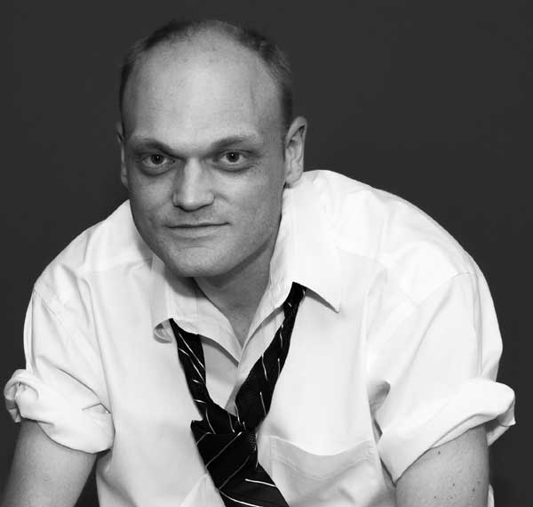

IOS & MAC DEVELOPER · PHOENIX, AZ
Thoughtful apps.
Lasting impact.
I’m Dallas. I build native experiences for Apple platforms — and lead the teams that bring them to life.
to platforms people rely on.✳
01 / SELECTED WORK
Built with purpose.
A few highlights from a career spent
turning complex problems into useful apps.
No projects in this category yet.
02 / EXPERIENCE
A career in building.

BASED IN PHOENIX, ARIZONA03 / A LITTLE ABOUT ME
Always curious.
Always building.
I started building native iPhone apps before the App Store existed. One of those early projects was iPhone-Finder, developed for the original iPhone.
Since then, my work has ranged from financial services and golf technology to developer tools and everyday utilities. Before moving into iOS and Mac development, I was a Senior Developer at PayPal.
I care about clear architecture, considered details, and software that feels natural to use.
See what I’m building on GitHub ↗04 / GET IN TOUCH
Good work starts
with a conversation.
Have a project in mind or want to connect?
Let’s talk about what comes next.